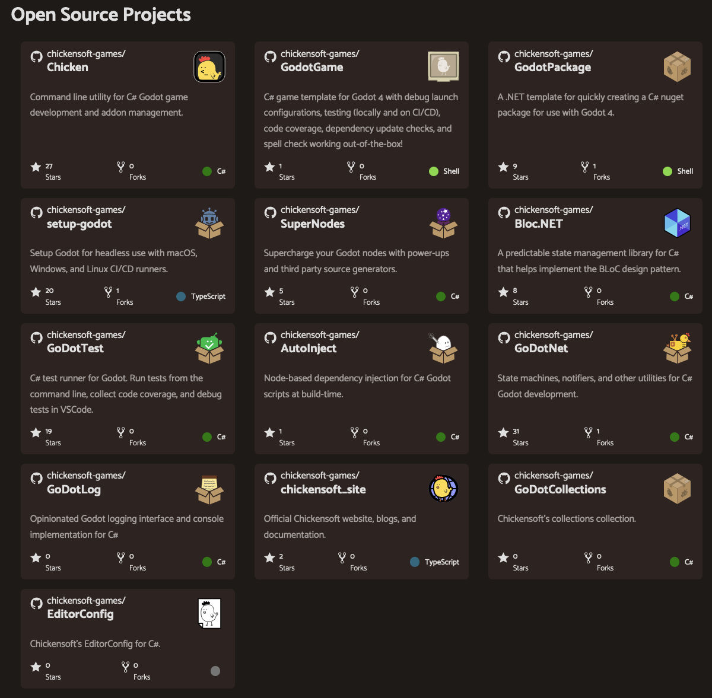

GDScript vs C# Performance Comparison
This past week, I spent some time investigating the differences between GDScript and C#. I've been creating a lot of C# libraries for Godot lately, so it was important for me to get a sense of which use cases might warrant the additional complexity of C#.
üëÄ Anecdotal Evidence
If you search online, you'll find a lot of anecdotal evidence suggesting that C# is significantly faster than GDScript. This makes sense, since C# is typically faster than most interpreted languages. But performance is a complex thing, and I wanted to know for myself! ü߆
üîç Let's Test It
I did some testing with GDScript and C# for the 2 types of processing-heavy systems that I often use:
üßÆ Test Case 1: Evaluating Physics Expressions at Runtime
To test out expression evaluation, I wrote small scripts that parse math expressions using code that I typically implement inside a larger system. For this test, I did the following:
- Generate a semi-complex math expression with multiple operators, variables, and nested expressions.
- Parse the expression recursively, evaluating it with actual values for the variables.
- Run this evaluation 100,000 times.

Here are the results (lower is better):
| Language | Time (seconds) |
|---|---|
| GDScript | 8.9 |
| C# | 2.2 |
Result: C# was 4x faster. üåü
üé≤ Test Case 2: State Machines
I also do a lot of state machine programming, which involves tracking state transitions that might happen multiple times per frame. To test this, I:
- Create simple state machine-like code to simulate transitioning between game states.
- The state machine includes state initialization, transition evaluation, and state updates.
- Run it for 10 million iterations.
Here are the results (again, lower is better):
| Language | Time (seconds) |
|---|---|
| GDScript | 42.8 |
| C# | 1.4 |
Result: C# was 30x faster! üöÄ
üì¶ Chickensoft's C# Packages
I've been working on open-source packages for Godot using C#, and they can help you leverage this performance advantage in specific scenarios without having to write everything in C#.

Visit Chickensoft to explore all of our packages that can help you build better games with Godot and C#!
ü§î When Should You Use C#?
Based on these tests and my experience, here's when you might want to consider C# for your Godot project:
- Complex games with high performance requirements
- Systems involving a lot of calculations (physics, procedural generation, etc.)
- Projects where you want to reuse existing C# libraries
- Large projects where static typing provides more stability
- Games with complex state management
However, GDScript is still great for:
- Prototyping
- Simple games
- Most UI logic
- Scripting game objects that don't need high-performance calculations
- Projects where you want to avoid the overhead of managing a C# development environment
üîÆ The Future
Godot 4 has improved GDScript's performance, but there's still a significant gap. Future versions might bring more improvements, but C# will likely maintain its performance edge for compute-intensive tasks.
The good news is that you don't have to choose just one! You can mix GDScript and C# in the same project, using each where it makes the most sense.
Join our Discord: https://discord.gg/gSjaPgMmYW
If you enjoyed this post, please consider starring our GitHub repositories and following us on socials!